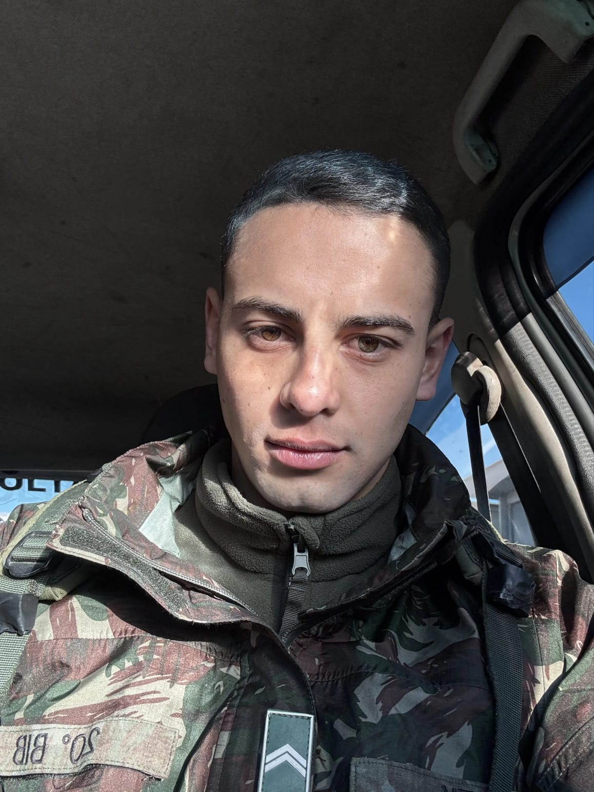
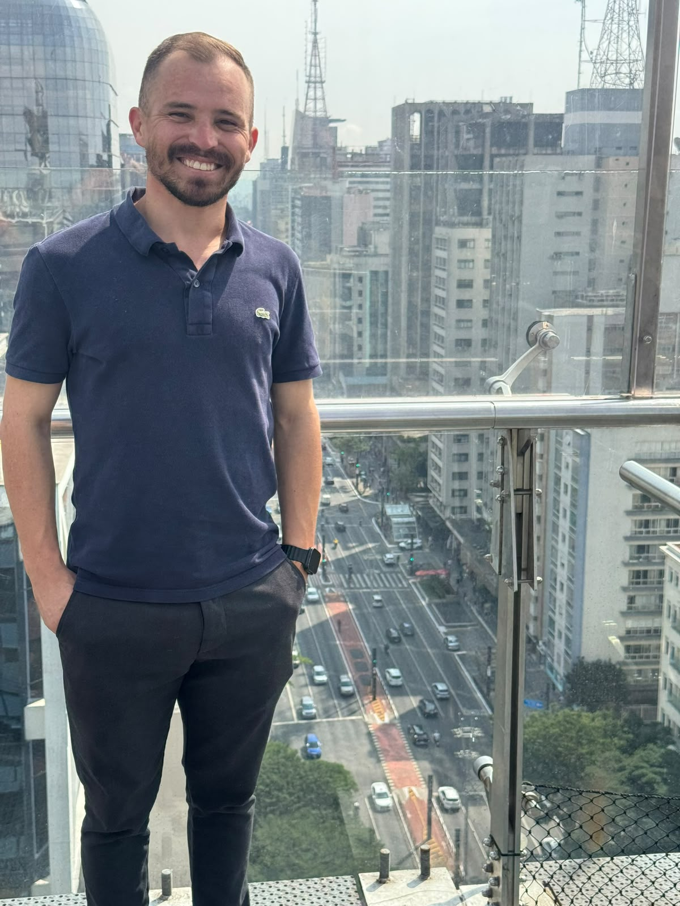

Lucas Smek
Fundador e criador de roteiros
Percorre cada trajeto a pé antes de vendê-lo. Destino favorito: Kyoto.
Falar com o LucasDois amigos, um roteiro jogado fora.

Fundador e criador de roteiros
Percorre cada trajeto a pé antes de vendê-lo. Destino favorito: Kyoto.
Falar com o Lucas
Fundador e responsável por parcerias
Negocia com hotéis e guias locais. Destino favorito: Patagônia.
Falar com o LuizNão. Os pacotes são um ponto de partida e podem ser ajustados.
Pode. Os valores são por pessoa em quarto duplo, com pequeno acréscimo para quem viaja só.
Uma entrada na reserva e o restante parcelado até a data da saída.